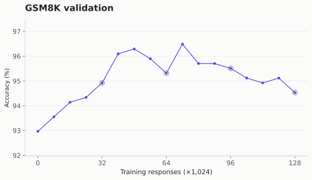
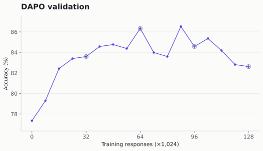
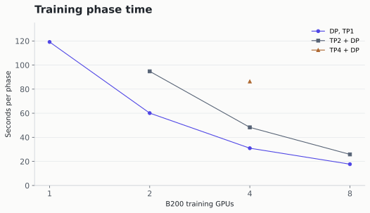

Choose the optimizer batch and learning rate together, then size rollout collection and GPU execution around them. In LLM reinforcement learning, “batch size” can mean prompts sent to a generator, responses used in one optimizer update, or work processed on one GPU. Those quantities control different parts of training.
Group Relative Policy Optimization (GRPO) estimates an answer’s advantage by comparing its reward with other answers to the same prompt. A rollout collects responses; an optimizer update changes the model parameters using their policy gradients. The important design choice is how much data to collect, how to divide it into updates, and when to refresh the generating policy.
This guide combines published DeepSeek-R1, DAPO, and Tencent batch-scaling results with two Qwen3.5-4B training runs and separate GPU benchmarks. The local runs measure one configuration on two math tasks; the published studies supply the broader evidence for choosing and scaling batches.
Background · Part 2RL Losses in 2026: From PPO to SAPO ↗Rewards, advantages, probability ratios, and policy-gradient objectives.Batch variables and accounting
The table defines the quantities for a synchronous collection followed by training. Its example is the actual configuration used for both Qwen3.5-4B runs in this article. Counts refer to retained responses; a prompt can recur in a later collection with newly generated answers.
| Variable | Definition and role | Measured Qwen3.5-4B run |
|---|---|---|
| \(P\): prompt batch | Prompt groups per collection. At fixed group size, it controls the amount of new training data collected before updating the generator. | 128 prompt groups |
| \(G\): group size | Responses per prompt. These rewards define the within-prompt comparison used to calculate advantages. | 8 responses per prompt |
| \(R=PG\): rollout batch | Total retained responses in a collection. This is a response count, not a token count. | 1,024 responses |
| \(B\): optimizer batch | Responses contributing to one global optimizer update, summed across data-parallel workers and gradient accumulation. | 256 responses per update |
| \(S\): updates per collection | Optimizer updates completed before publishing new weights to the generator in this synchronous setup. | 4 updates |
| \(E\): policy epochs | Passes over the same saved responses. This is distinct from generating fresh responses to prompts seen in an earlier dataset epoch. | 1 pass; no response replay |
The accounting invariant
With one pass, no discarded responses, and equal batches, the number collected must equal the number consumed:
For the measured run, \(128\times8=256\times4=1{,}024\). Each response contributes to one update. The four updates use disjoint slices; they are not four policy epochs. With \(E\) complete passes over the same collection, the accounting becomes \(EPG=BS\), where \(S\) then counts all optimizer updates.
These are constraints, not optimization rules. With \(G\) and \(E=1\) fixed, \(P\) and \(B\) remain two independent choices; \(S=PG/B\) follows and must be an integer. After the first update, later slices are evaluated by a policy that has moved away from the generator’s snapshot. Subdividing a collection therefore changes both update frequency and the policy mismatch encountered within that collection.
Filtering requires separate counters for generated and retained responses. The identity above describes the retained training batch, while cost accounting must include rejected responses. In asynchronous systems, a collection boundary can contain responses from different policy versions; policy age needs a separate measurement.
Batch accounting calculator
Assumes one pass over retained responses, equal optimizer batches, and no response filtering.
Generation uses one weight snapshot. Training publishes new weights after all these updates.
The diagram shows slice sizes. Token balancing can reorder actual responses, and group members need not stay in the same update.
Execution variables and fixed learning settings
A microbatch is processed in one forward/backward pass. With uniform response-count microbatches, \(D\) data-parallel workers, \(m\) responses per worker, and \(A\) accumulation steps give \(B=DmA\). Dynamic token packing uses variable microbatch sizes, so the implementation must preserve the intended global response weighting across those batches.
Generation concurrency counts in-flight responses and is constrained by the live-token KV cache. It can differ from \(R\), especially with streaming generation. Tensor parallelism divides supported model operations; it does not multiply the number of independent responses contributing to \(B\).
| Additional variable | Meaning | Qwen3.5-4B setting |
|---|---|---|
| \(\eta\): learning rate | Optimizer step-size setting; retune when changing the global optimizer batch. | \(10^{-6}\) |
| \(L_{\max}\): response limit | Maximum generated output length; changes the task and its compute cost. | 16,384 output tokens |
| \(T_{\mathrm{pack}}\): packing target | Token allowance used to form GPU microbatches; independent of the response limit. | 8,192 tokens; a longer response remains intact |
The measured runs keep the reward, advantage normalization, loss reduction, optimizer, clipping, and decoding settings fixed. Their exact values appear in Experimental method and limitations. Changing only packing can preserve the learning configuration, provided loss weighting is maintained; changing \(B\), \(G\), or response reuse changes the statistical experiment.
Miles implementation boundaries
In our pinned Miles version, supplying the number of inner steps derives the optimizer batch by integer floor division. This is not a general, exact “set any three” solver. Our launcher validates all four positive integers and rejects any shape where the products differ.
--num-rollout counts outer generate-then-train cycles. --balance-data reorders responses for token load; group members need not occupy the same update because their advantages have already been calculated. Oversampling and dynamic filtering can generate extra groups: the equality describes what survives to training, while timing must count the discarded work too. Our comparison uses no filtering.
With one answer per prompt, Miles disables division by the group standard deviation. Group centering subtracts the average reward; with one answer, it subtracts that answer’s reward from itself, yielding zero policy advantage. A one-answer algorithm needs a different baseline or objective.
Published training configurations
Published frontier-model training provides concrete precedents, but the numbers describe a particular model, objective, and training stage. The following configurations distinguish retained rollout volume from the optimizer batch.
| Model and source | Retained collection | Optimizer updates | Learning rate |
|---|---|---|---|
| DeepSeek-R1, first RL stage | \(G=16\), \(R=8{,}192\); \(P=512\) derived from \(R/G\) | \(B=512,\ S=16,\ E=1\) | \(3\times10^{-6}\) |
| DAPO, Qwen2.5-32B | \(P=512,\ G=16,\ R=8{,}192\); additional generation can be filtered out | \(B=512,\ S=16\) | \(10^{-6}\), with 20-rollout-step warm-up |
| Tencent, Qwen3-30B-A3B-Instruct-2507 | Reference \(P=128,\ G=8,\ R=1{,}024\) | \(B=1{,}024,\ S=1,\ E=1\) | Reference \(10^{-6}\); scaled with batch size |
| Miles Qwen3.5-4B example | \(P=32,\ G=8,\ R=256\) | \(B=256,\ S=1\) | \(10^{-6}\) |
| Qwen3.5-4B runs in this article | \(P=128,\ G=8,\ R=1{,}024\) | \(B=256,\ S=4,\ E=1\) | \(10^{-6}\) |
Worked example: DeepSeek-R1
The primary paper reports 16 responses per question and 8,192 outputs per rollout in the first RL stage. Those counts imply 512 prompt groups. The collection is randomly divided into 16 mini-batches of 512 responses, trained for one inner epoch:
Here, a “training step” consumes 512 responses; it does not mean collecting a fresh 8,192-response rollout. The large collection amortizes generation, while the smaller optimizer batch allows more frequent parameter updates. This stage also uses a reference-policy penalty and its own reward and clipping settings, so copying only its batch sizes does not reproduce R1.
Group size also varies across published work. DeepSeekMath uses 64 responses per question. GSPO and SAPO report four mini-batches in their reasoning experiments. These are useful starting points for experiments, rather than evidence that a single group size or update count is best across models.
Batch-size invariance in Tencent’s scaling study
When Do Larger Batches Help Scale LLM Reinforcement Learning? separates learning efficiency from execution throughput. Its term batch-size invariance means approximately matching learning curves at equal cumulative training samples after retuning. Unlike \(PG=BS\), this is an empirical property with a limited range, not an accounting identity.
Learning-rate retuning and the range of invariance
For GRPO on Qwen3-30B-A3B-Instruct-2507, the paper fixes \(G=8\) and takes one optimizer step per retained batch. It varies \(P\) from 64 to 4,096, starting from \(P_0=128\), \(B_0=1{,}024\), and \(\eta_0=10^{-6}\). Adam learning rates use the square-root rule:
For example, doubling \(P\) from 128 to 256 also doubles \(B\) from 1,024 to 2,048 because \(S=1\). The candidate learning rate becomes approximately \(1.414\times10^{-6}\). The paper’s retuned curves align approximately for \(P=64\)–1,024 over the measured window; the largest settings, 2,048 and 4,096, depart from that family. Holding the learning rate fixed while doubling the batch instead increases samples to the target by 67% in its reported GRPO comparison.
This supports square-root scaling as an initial candidate with a fixed-rate control. It does not establish a universal critical batch, and the study retunes only the learning rate; broader retuning could change the observed boundary.
Generation throughput and time to a validation target
Let \(N^*\) be retained training responses required to reach a fixed validation target, and \(q\) the end-to-end throughput over that run. Then \(T=N^*/q\). Relative to a baseline, a larger batch is faster only when
At the paper’s 77% validation target, measured as mean@32 averaged over AIME 2024 and 2025, its GRPO accounting reports 11.90 hours for the reference prompt batch of 128 and 8.42 hours for the retuned batch of 1,024: approximately 29% less time. Increasing the prompt batch further to 2,048 takes 14.68 hours because the additional samples needed outweigh the throughput gain. These are reported results from Tencent’s workload.
Its separate PPO experiment with an internal Hunyuan model reports up to 2.29× generation throughput on fixed hardware. This is a generation-stage measurement on a different workload; it is not a 2.29× end-to-end GRPO speedup.
Both workloads use asynchronous partial rollouts and streaming generation, with generation-side batch \(B_{\mathrm{gen}}=2B_{\mathrm{train}}\). Their one-update comparisons do not determine the best number of disjoint updates in our synchronous Miles runs. Increasing our \(P\) while holding \(B=256\) fixed increases \(S\); it does not trigger the same optimizer-batch scaling experiment.
Selecting rollout and optimizer batch sizes
Begin with a working model-specific optimizer batch and group size. Define a validation target or a fixed training budget before comparing alternatives. Keep the reward, loss, response limit, data distribution, and evaluation decoding fixed during a batch comparison.
Group size and reward variation
For the Qwen3.5-4B setup, \(G=8\) is a documented starting point. Measure how often a group contains both correct and incorrect answers. With outcome rewards and centered advantages, all-correct and all-incorrect groups produce no relative reward signal. Increasing \(G\) can reveal more variation, but at fixed \(R\) it reduces the number of prompt groups. A persistently low mixed-group fraction also warrants checking task difficulty and the reward function.
Optimizer-batch scaling and rollout subdivision
| Question | What changes | What to compare |
|---|---|---|
| Would a larger optimizer batch help? | Vary \(B\); keep \(G\) and \(S\) fixed, deriving \(P=BS/G\). Compare candidate learning rates. | Learning at equal retained samples, response lengths, and time to the same validation target. |
| Would less frequent generation help? | Hold \(B\), \(G\), and learning rate fixed; increase \(P\), hence \(S\). | Complete-cycle throughput and policy-ratio, clipping, or effective-sample-size diagnostics by inner update. |
| Would more responses per prompt help? | Vary \(G\) at fixed \(R\) and \(B\); derive \(P=R/G\). | Mixed-group rate, prompt coverage, and held-out learning; advantage normalization must be specified. |
| Can the same learning configuration run faster? | Hold \(P,G,B,S,E\) fixed; vary microbatch packing, parallelism, or rollout concurrency. | Memory, complete elapsed time, and numerical/quality checks under the intended loss weighting. |
For Adam, test square-root learning-rate scaling alongside the current learning rate when changing \(B\). Do not scale the learning rate merely because \(S\) increases while \(B\) stays fixed. Validate integer batch accounting and the framework’s data-parallel divisibility constraints before launching.
For multiple inner updates, inspect policy-ratio distributions, clipping, approximate KL, and effective sample size by update position. The trainer/rollout log-probability difference at identical weights instead measures disagreement between execution engines; it does not measure drift caused by intervening optimizer updates.
Validation quality under a fixed hardware budget
Increase generation concurrency while memory and policy-age constraints permit, and measure complete execution time including weight transfer, evaluation, and checkpointing. Compare learning against retained responses and tokens as well as elapsed time. Response counts alone can hide a shift toward longer answers.
Retain a larger batch only if its measured throughput gain compensates for any extra samples needed to reach the target. Choose the training horizon in advance: ScaleRL shows that a batch ranking can change with training duration. A short screening winner therefore needs confirmation at the intended budget, ideally across training seeds.
Qwen3.5-4B learning results
We trained the full text backbone of Qwen3.5-4B on GSM8K and DAPO-MATH-17K with \(P=128,G=8,B=256,S=4,E=1\) and learning rate \(10^{-6}\). These are two training trajectories of one configuration; they do not compare batch alternatives.
Each task's retained training path contains 128 rollouts and 512 Adam updates. Every rollout supplied 1,024 fresh training responses, consumed once in four disjoint batches. We evaluated 512 validation questions before training and after every 8,192 responses.
The table reports the fixed-budget endpoint on held-out test questions. The initial model and endpoint each answer every question once using greedy decoding and the same 16,384-token response cap. Changes are in percentage points (pp).
We also keep a validation-selected checkpoint: the best of five predeclared candidates according to validation accuracy. Test results never determine that choice.
| Test task | Initial | Endpoint | Change, 95% interval |
|---|---|---|---|
| GSM8K 1319 questions | 93.48% | 95.15% | +1.67 pp [+0.30 pp, +3.03 pp] |
| DAPO-MATH-17K 1024 questions | 74.71% | 81.93% | +7.23 pp [+4.69 pp, +9.86 pp] |
Intervals resample paired test questions 20,000 times. They describe uncertainty across questions, conditional on these trained models. They do not measure variation across training seeds. DAPO uses our held-out split, not an official DAPO test benchmark.
On GSM8K, mean test-answer length changed from 390 to 1224 output tokens; the selected checkpoint averaged 1135 tokens. 1.06% of endpoint answers hit the response cap. These generation costs use the same decoding settings for all checkpoints.
On DAPO-MATH-17K, mean test-answer length changed from 4796 to 6586 output tokens; the selected checkpoint averaged 7899 tokens. 5.08% of endpoint answers hit the response cap. These generation costs use the same decoding settings for all checkpoints.
Sensitivity to unfinished responses. The frozen grader can credit a numeric answer before a response is cut off. A post hoc sensitivity check counts every unfinished response as incorrect, without changing checkpoint selection. On GSM8K, this reduces the endpoint gain to +1.21 pp, with an interval that includes zero. The selected checkpoint still improves by +2.50 pp [+1.29 pp, +3.71 pp].
On DAPO-MATH-17K, counting unfinished answers as incorrect gives an endpoint gain of +7.42 pp [+4.88 pp, +9.96 pp]. The validation-selected checkpoint gains +9.18 pp [+6.84 pp, +11.62 pp].
The DAPO endpoint–selected test difference is -1.76 pp [-3.71 pp, +0.20 pp]. That interval includes zero, so this test does not establish that the selected checkpoint is more accurate. Its answers are longer.
Accuracy when unfinished responses count as incorrect
| Task | Endpoint | Selected | Endpoint gain, 95% interval |
|---|---|---|---|
| GSM8K | 94.69% | 95.98% | +1.21 pp [-0.15 pp, +2.58 pp] |
| DAPO-MATH-17K | 81.93% | 83.69% | +7.42 pp [+4.88 pp, +9.96 pp] |
These are the same saved test responses, rescored by completion status. No new model generation or checkpoint choice is involved. The companion records include the number of credited truncated answers and all paired comparisons.

- GSM8K ended at 94.53% validation accuracy. It began at 92.97%; the test result above is measured separately.
- The last half of training changed validation by -0.78 pp. The paired-question 95% interval is [-2.54 pp, +0.98 pp]. The interval includes zero; this does not establish either continuing improvement or a plateau.

- DAPO-MATH-17K ended at 82.62% validation accuracy. It began at 77.34%; the test result above is measured separately.
- The last half of training changed validation by -3.71 pp. The paired-question 95% interval is [-6.64 pp, -0.98 pp]. The late decline argues for retaining the validation-selected checkpoint at this budget.
Checkpoint selection and alternative learning axes
We selected among the initial model and checkpoints saved at 32,768, 65,536, 98,304, and 131,072 responses, using validation accuracy alone. Ties favor the earlier checkpoint. Test scores never changed this choice.
| Task | Selected exposure | Selected test accuracy | Endpoint minus selected |
|---|---|---|---|
| GSM8K | 98,304 responses | 96.13% | -0.99 pp [-1.90 pp, -0.08 pp] |
| DAPO-MATH-17K | 65,536 responses | 83.69% | -1.76 pp [-3.71 pp, +0.20 pp] |
The numerical curves also include generated output tokens, optimizer updates, elapsed job time, and measured active-phase time. Output tokens matter: equal response counts can require very different amounts of computation.
Clipping by optimizer-update position
Clipping limits how much a changed action probability can influence the policy objective. The table averages the logged clipping fraction at each update position across the run. Miles averages token indicators within each response, then averages responses.
| Task | Update 1 | Update 2 | Update 3 | Update 4 |
|---|---|---|---|---|
| GSM8K | 0.000% | 0.005% | 0.008% | 0.012% |
| DAPO-MATH-17K | 0.000% | 0.004% | 0.007% | 0.011% |
The first position uses the unchanged, trainer-scored policy. Later positions measure changes after earlier updates. Zero-advantage responses also contribute zero effective clipping, so clipping alone cannot prove that an update remains useful. The companion records include probability-change and importance-weight diagnostics as well.
The fraction of groups with both correct and incorrect answers averaged 14.75% in the first eight rollouts and 4.10% in the last eight on GSM8K; 37.11% in the first eight rollouts and 20.41% in the last eight on DAPO-MATH-17K. All-equal reward groups have zero centered advantage. These measurements describe our recipe; they do not compare four updates against one or establish a better group size.
GPU parallelism and training throughput
Data parallelism (DP) puts a full model replica on each training GPU and divides the batch between them. Tensor parallelism (TP) divides supported operations within a model across GPUs. TP2/DP4 means four replicas, each split across two GPUs. Because the 4B model fit on one NVIDIA B200 GPU, we measured both approaches before choosing the main allocation.
This benchmark replays the same 256 saved responses for four updates from initial weights. It is a systems measurement, not a learning experiment. Each training phase includes old-policy probability scoring and optimization.

- Eight-way data parallelism was fastest after warm-up: 17.70 seconds, versus 25.82 seconds for TP2/DP4 on the same eight GPUs.
- Four-way data parallelism was also faster than splitting each model: 30.95 seconds for DP4, versus 48.26 seconds for TP2/DP2 and 86.37 seconds for TP4.
Qwen3.5 combines conventional attention with recurrent blocks that compress context into a fixed-size state. The pinned attention wrapper and Qwen3.5 implementation replicate those recurrent blocks across tensor-parallel ranks. Increasing TP therefore does not divide every operation. The initial gradient norms were within 0.006% across the DP arms; TP4 differed by about 3.2%. These are comparable measured workloads, not a claim of numerical identity.
The complete short benchmark jobs include initialization and compilation. For example, DP8 took 413 seconds overall and TP2/DP4 took 257 seconds despite the latter's slower warm phases. Startup and cache state varied across these single jobs, so those totals do not isolate a topology-only effect. Repeated training amortizes overhead; fresh response lengths can still trigger more compilation.
Training allocation and elapsed time
A generation engine serves requests using its own model replica; each TP1 engine here uses one GPU. GSM8K used two worker machines (nodes), with four GPUs training and four generating responses. DAPO began with eight GPUs per role, temporarily resumed with four per role after worker losses, then used eight training GPUs and eight generation GPUs across three nodes. Its final segment used 8 training GPUs and 4 generation engines across 2 nodes. Both tasks were synchronous: the generator waited during training, and trainers waited during generation.
| Task | Training + generation | Complete job | Output tokens |
|---|---|---|---|
| GSM8K | 2 nodes 4 training (DP4) + 4 generation (TP1) | 3.66 h 29.2 allocated GPU-hours | 122.7M |
| DAPO-MATH-17K | 2 nodes 8 training (DP8) + 4 generation (TP1) Final allocation; began with 8 + 8 | 12.49 h 178.7 allocated GPU-hours | 1.025B |
All accelerators were Tier-2 B200s. Complete job time includes startup, validation, and saving checkpoints. For DAPO it sums the recovered trajectory's execution segments, including discarded work. Allocated GPU-hours include idle roles during those jobs; recovery setup, pilots, and final test jobs are additional costs. Output tokens in the table describe the retained training path.
DAPO's worker losses changed both allocation and total cost. Across checkpoint rewinds, 11,264 completed responses and 94.3 million output tokens are excluded from the learning axes and included in execution cost. Elapsed time including recovery was 13.94 h. These interruptions prevent a clean speed comparison between the two tasks.
Recovery history and additional costs
An earlier DAPO attempt lost its training node after 42.7 minutes and 10,240 responses, before a recovery checkpoint existed. Its 11.38 allocated GPU-hours are additional cost. The measured trajectory restarted from initial weights with the same learning settings.
Later worker losses required restoring checkpoints at 32,768 and 94,208 responses. A planned move at 36,864 retained all completed work and used additional available GPUs. Learning settings stayed fixed; recovery saves became more frequent, eventually occurring after every rollout. Only checkpoints at the original 32,768-response intervals remained eligible for selection.
Two startup failures produced no responses or updates: an allocation check stopped after sixteen seconds when a replacement worker disappeared; the first colocated launch stopped after 72.91 seconds because its memory allocator was incompatible with CPU offloading. Disabling expandable memory segments fixed that compatibility issue. Their costs are separate from training segments. Another eight-GPU worker disappeared during preparation before any training began. The four-GPU colocated retry then ran out of memory during its third optimizer update, before saving. Its completed work is included in the discarded-work totals. We returned to the previously working placement with eight training GPUs and four generation GPUs; no allocator split-size tuning was applied. A subsequent placement check caught IP sorting that split training across two local filesystems. That attempt completed one rollout and no optimizer update before being stopped; its work and 337.58 seconds are included in execution cost. The corrected launcher keeps all eight training GPUs and checkpoint shards on one host. After two durable cycles, we added four available generation GPUs, retaining all completed work and reaching eight training plus eight generation GPUs across three nodes.
A later generation-worker loss occurred after the checkpoint at 100,352 responses was durable. Its replacement also disappeared during the next attempt’s first rollout. That attempt recorded no completed batch; partial response counts were not persisted. We continued from the same saved state on the twelve surviving GPUs and included both interrupted jobs in execution time. We also measured a small change to checkpoint-upload concurrency; three subsequent uploads averaged 82.06 seconds, versus 85.83 seconds for four preceding uploads on the same training node. We kept that small operational change; these sequential observations do not isolate its causal effect.
Each training segment was audited against W&B. The out-of-memory attempt's final discarded update exists in the local log but was not flushed to W&B; its audit explicitly records the missing row. It contributes no retained learning result. The interruption during a first rollout left no numerical rows to compare. Some interrupted durations are bounded by infrastructure and cleanup events; accounting uses their upper bounds. The companion records preserve each allocation, checkpoint restore, discarded update, and timing bound. Observed worker deletions do not establish their underlying cause.
Generation favored more engines in a separate DAPO inference probe: approximately 143 seconds on four engines versus 101 seconds on eight for 128 prompts × eight answers. These were single trials with different sampled outputs. The four-engine trial shared CPU resources with a replay on separate GPUs; complete jobs were nearly tied at 240 versus 236 seconds.
We also tested packing with real long responses. An 8,192-token target took 12.26 seconds in its warm phase and reached 131.4 GiB on the logging rank; a 16,384-token target took 17.14 seconds and reached 142.8 GiB. We kept 8,192. A single response longer than that target stays intact; it is not truncated to fit the packing target.
Runtime settings in the measured runs
BF16 weights, efficient attention, CUDA graphs that replay recurring GPU operations during generation, dynamic token packing, stored activations, bounded CPU thread counts, cached models, and periodic validation/checkpointing. For this pinned hybrid-model stack, disabling the prefix cache in SGLang, our generation engine, enables its scheduler to overlap CPU preparation and GPU execution. That runtime choice is separate from changing the learning batch.
Memory figures record the logging rank's observed peak, not the maximum across every GPU. Runtime pins, timings, and all eight TP/DP arms are in the companion artifacts.
Recommended starting configuration
For this Qwen3.5-4B/Miles workload, start with \(B=256\) responses per optimizer update, \(G=8\) responses per prompt, and learning rate \(10^{-6}\). With those choices fixed, derive the prompt batch from the desired update count:
The pinned Miles example uses \(S=1\), giving 32 prompts and 256 responses per collection. The two measured runs here use \(S=4\), giving 128 prompts and 1,024 responses. The measured configuration improves held-out accuracy on both tasks at the fixed endpoint, but the study does not establish that four updates outperform one.
To increase the optimizer batch, retune the learning rate and compare equal-sample learning before judging speed. To improve hardware utilization while keeping that batch fixed, tune packing, concurrency, and parallelism. For this model on B200s, the measured training phases favor TP1 with data parallelism. The final choice should minimize time to the required validation quality within the memory and compute budget.
Experimental method and limitations
We trained all parameters of the model’s text backbone with GRPO and centered, standard-deviation-normalized advantages; sequence-mean loss; lower/upper policy clipping 0.2/0.28; Adam with betas 0.9/0.98 and weight decay 0.1; gradient norm cap 1. No penalty against a frozen reference model, entropy bonus, dynamic filtering, asynchronous policy generation, or response replay was enabled. This is GRPO on DAPO's data, not the complete DAPO algorithm.
Training used temperature 1. Evaluation used greedy decoding. Both used non-thinking chat mode, prompts requesting step-by-step answers, and a 16,384-token response cap. This template setting did not prevent long reasoning or generated thinking delimiters. A small validation pilot compared mode, cap, and cache settings jointly; it does not isolate a causal advantage for non-thinking mode. Its 8K cap truncated 28.9% of responses; the chosen 16K setup truncated none of that pilot's 128 responses.
| Source | Train | Validation | Test |
|---|---|---|---|
| GSM8K | 6,961 | 512 | 1,319 official test |
| DAPO-MATH-17K | 15,640 | 512 | 1,024 held out |
The official DAPO file contains 1,791,700 repeated rows. Whitespace normalization yields 17,188 prompt groups; excluding twelve groups with conflicting labels leaves 17,176. We split those groups before training. Exact source revisions, ordered split IDs, and hashes reproduce all six files byte for byte.
Numeric GSM8K answers accept the usual final-answer formats. DAPO respects the source's Answer: format, with boxed-answer fallback; an explicit wrong final answer cannot be rescued by an earlier correct number. Twenty-two verifier cases passed. Spot checks identified one incorrect validation label in each dataset; we retained the frozen source labels. Each item can affect its task's validation score by at most 0.195 percentage points. The label checks and completion caveats document the evidence; they do not estimate the prevalence of label errors.
Each task has one training seed. The same prompts can recur across dataset epochs, with fresh responses each time. The splits isolate our RL training; they do not prove that questions were absent from the model's earlier training. These results do not establish transfer beyond these two math distributions, a model-size scaling law, or a globally optimal batch tuple.
Reproducibility and accounting
We preserve source hashes, resolved learning settings, runtime/model revisions, per-question correctness, response and token counts, all train diagnostics, checkpoint selection, and independent comparisons with persisted W&B histories. Checkpoints include optimizer, trainer random state, and data position. Resuming does not promise bitwise-identical generation.
The public bundle omits credentials, private node identities, and internal infrastructure configuration. It includes the measured scientific hooks and portable arguments; trained checkpoints remain in private study storage. Earlier Qwen2.5 artifacts remain archived separately and are not evidence for this model.
References and reproducibility
Primary papers and pinned runtime sources; DeepSeek-R1, DAPO, and Tencent’s batch-scaling paper rechecked September 16, 2026. The companion files include measured training hooks and portable argument lists.
- When Do Larger Batches Help Scale LLM Reinforcement Learning? Tencent Hunyuan, 2026; Sections 3–5.
- DeepSeekMath: Pushing the Limits of Mathematical Reasoning in Open Language Models.
- DAPO: An Open-Source LLM Reinforcement Learning System at Scale.
- Group Sequence Policy Optimization.
- Soft Adaptive Policy Optimization.
- The Art of Scaling Reinforcement Learning Compute for LLMs.
- DeepSeek-R1: Incentivizing Reasoning Capability in LLMs via Reinforcement Learning, v2; first-stage RL configuration.
- Miles runtime
7e03b728faf9: batch derivation, group centering, and log-probability mismatch diagnostic. - Qwen3.5-4B; GSM8K; official DAPO-MATH-17K. Exact revisions and split hashes are in the companion manifests.
- Pinned Miles Qwen3.5-4B example: 32 prompts × eight responses, one 256-response optimizer batch, LR 1e-6.
How to cite this post
@misc{dong2026grpobatchknobs,
title = {Choosing Batch Sizes for LLM Reinforcement Learning},
author = {Dong, Simon},
year = {2026},
url = {https://simondong1.github.io/grpo-batch-knobs.html}
}